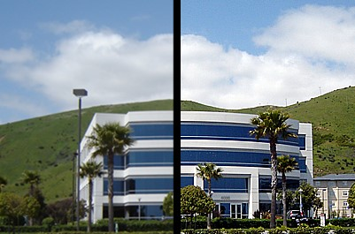
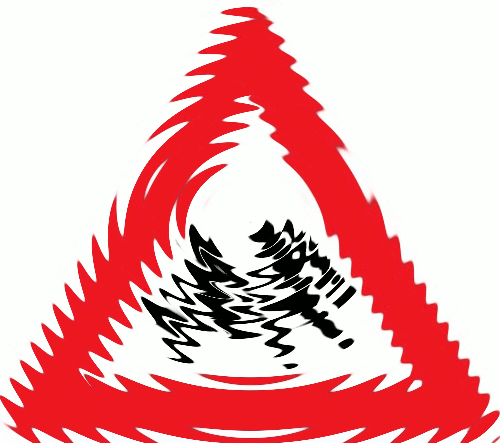
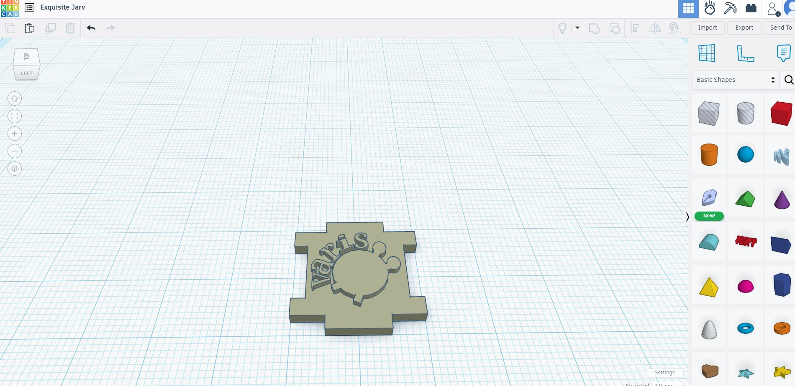
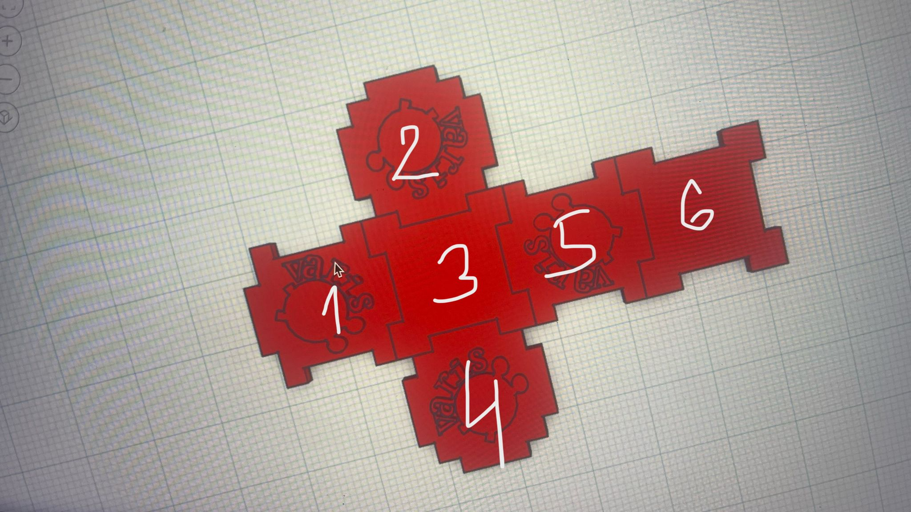

Mani sauc Kirils Cvetkovs, es mācos 10.e klasē, un šis ir mans datorikas portfolio. 2024./2025. mācību gads ar skolotāju Aiju Lūsi datorikā bija ļoti interesants un produktīvs.
Pārlapojot MENU kreisajā pusē, var apskatīt, ko es iemācījos dažādās informātikas jomās, kā arī to, ko gada laikā darīju savā individuālajā tēmā.
Es iemācījos rediģēt dažādas lietas attēlos, lai tos uzlabotu, kā arī veidoju GIF animācijas, izmantojot rastra grafiku. Es to darīju ar GIMP programmu.
 Es iemācījos veidot logotipu, izmantojot vektorgrafiku. Es to darīju ar Inkscape programmu.
Es kopā ar savu komandu veidoju kuba 3D modeli, lai pēc tam to izdrukātu ar 3D printeri.
Es iemācījos izmantot Tinkercad programmu, lai izveidotu 3D modeļus, un arī redzēju, kā strādāt ar 3D printeri.
 No mūsu pieredzes, izveidojot kuba 3D modeli, es izveidoju un montēju videoklipu.
Es iemācījos izmantot CapCut montāžas programmu.
Es iemācījos lietot Word un uzzināju arī daudzas tā labās funkcijas.
Es iemācījos lietot Excel un uzzināju arī daudzas tā labās funkcijas.